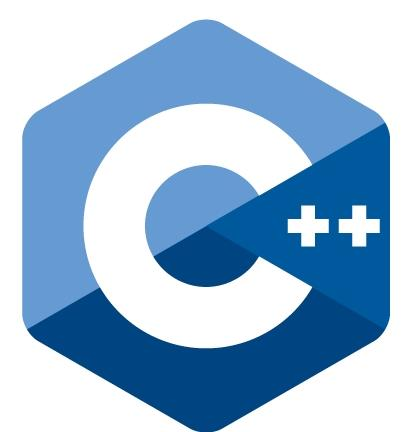
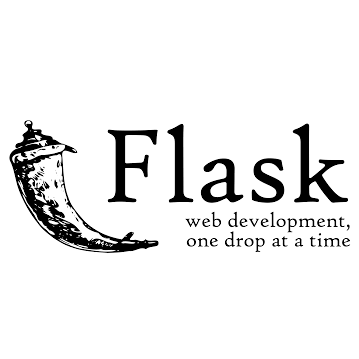

{kind=link}
{kind=link}
{kind=link}
{kind=link}
{kind=link}
{kind=link}
Technical Skills:
Also, I have prior experience/classes with:
- 
-

-

-

- 
-

A Facebook Messenger Bot for Northwestern CS students that answers questions related to EECS course requirements and offerings
Worked on scraping and cleaning course data from various Northwestern EECS resources and building a question parser using Python
Built using Python, Flask, and Heroku
A web app for Northwestern CS students to identify cities and companies where alumni work
Wrote a script that builds a customized Google Map with info windows detailing information about alumni from LinkedIn
Built using HTML, JavaScript, and the Google Maps API
Conducted a fitness tracking data collection project with 3 high school students to analyze lifestyle and fitness patterns
Used a structured plan of online courses and tutorials to learn introductory web development
Created a responsive website summarizing the results of the data collection project and promoting fitness tracking
Built using HTML, CSS, and Bootstrap


McCormick School of Engineering, Northwestern University
B.S. in Computer Science, Anticipated
June 2019
GPA: 3.7/4.0
Dean's List: Winter Quarter 2016
Relevant Past Coursework:
Current Coursework (Winter 2017):